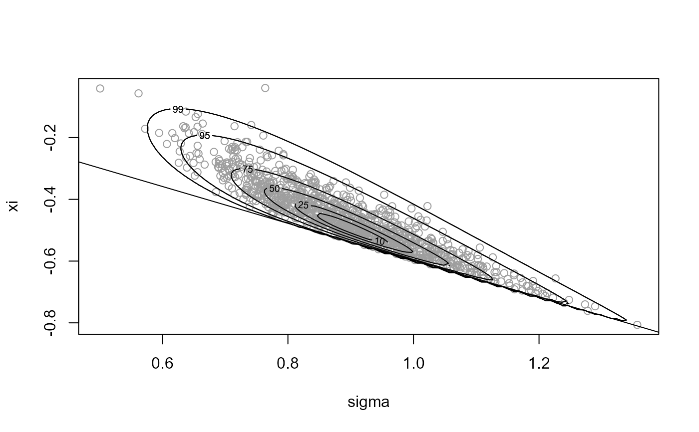
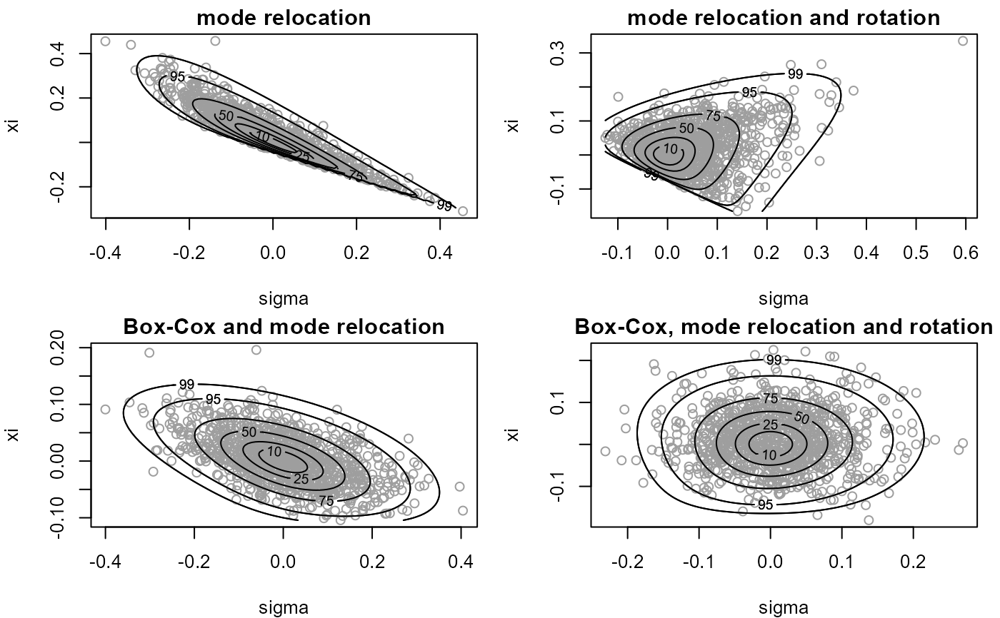

Selecting Box-Cox parameter lambda for general d using C++ via Rcpp.
Source:R/box_cox_functions_rcpp.R
find_lambda_rcpp.RdFinds a value of the Box-Cox transformation parameter lambda for which the (positive) random variable with log-density logf has a density closer to that of a Gaussian random variable. In the following we use theta to denote the argument of logf on the original scale and phi on the Box-Cox transformed scale.
find_lambda_rcpp( logf, ..., d = 1, n_grid = NULL, ep_bc = 1e-04, min_phi = rep(ep_bc, d), max_phi = rep(10, d), which_lam = 1:d, lambda_range = c(-3, 3), init_lambda = NULL, phi_to_theta = NULL, log_j = NULL, user_args = list() )
Arguments
| logf | A pointer to a compiled C++ function returning the log of the target density \(f\). |
|---|---|
| ... | further arguments to be passed to |
| d | A numeric scalar. Dimension of f. |
| n_grid | A numeric scalar. Number of ordinates for each variable in phi. If this is not supplied a default value of ceiling(2501 ^ (1 / d)) is used. |
| ep_bc | A (positive) numeric scalar. Smallest possible value of phi to consider. Used to avoid negative values of phi. |
| min_phi, max_phi | Numeric vectors. Smallest and largest values of phi at which to evaluate logf, i.e. the range of values of phi over which to evaluate logf. Any components in min_phi that are not positive are set to ep_bc. |
| which_lam | A numeric vector. Contains the indices of the components of phi that ARE to be Box-Cox transformed. |
| lambda_range | A numeric vector of length 2. Range of lambda over which to optimise. |
| init_lambda | A numeric vector of length 1 or d. Initial value of
lambda used in the search for the best lambda. If |
| phi_to_theta | A pointer to a compiled C++ function returning
(the inverse) of the transformation from theta to phi used to ensure
positivity of phi prior to Box-Cox transformation. The argument is
phi and the returned value is theta. If |
| log_j | A pointer to a compiled C++ function returning the log of the Jacobian of the transformation from theta to phi, i.e. based on derivatives of phi with respect to theta. Takes theta as its argument. |
| user_args | A list of numeric components providing arguments to
the user-supplied functions |
Value
A list containing the following components
A numeric vector. The value of lambda.
A numeric vector. Box-cox scaling parameter, estimated by the geometric mean of the values of phi used in the optimisation to find the value of lambda, weighted by the values of f evaluated at phi.
A numeric vector. An initial estimate of the mode of the Box-Cox transformed density
A numeric vector. Estimates of the marginal standard deviations of the Box-Cox transformed variables.
as detailed above (only if phi_to_theta is
supplied)
as detailed above (only if log_j is supplied)
as detailed above (only if user_args is supplied)
Details
The general idea is to evaluate the density f on a d-dimensional
grid, with n_grid ordinates for each of the d variables.
We treat each combination of the variables in the grid as a data point
and perform an estimation of the Box-Cox transformation parameter
lambda, in which each data point is weighted by the density
at that point. The vectors min_phi and max_phi define the
limits of the grid and which_lam can be used to specify that only
certain components of phi are to be transformed.
References
Box, G. and Cox, D. R. (1964) An Analysis of Transformations. Journal of the Royal Statistical Society. Series B (Methodological), 26(2), 211-252.
Andrews, D. F. and Gnanadesikan, R. and Warner, J. L. (1971) Transformations of Multivariate Data, Biometrics, 27(4).
Eddelbuettel, D. and Francois, R. (2011). Rcpp: Seamless R and C++ Integration. Journal of Statistical Software, 40(8), 1-18. http://www.jstatsoft.org/v40/i08/.
Eddelbuettel, D. (2013). Seamless R and C++ Integration with Rcpp, Springer, New York. ISBN 978-1-4614-6867-7.
See also
ru_rcpp to perform ratio-of-uniforms sampling.
find_lambda_one_d_rcpp to produce (somewhat)
automatically a list for the argument lambda of ru for the
d = 1 case.
Examples
# Log-normal density =================== # Note: the default value max_phi = 10 is OK here but this will not always # be the case ptr_lnorm <- create_xptr("logdlnorm") mu <- 0 sigma <- 1 lambda <- find_lambda_rcpp(logf = ptr_lnorm, mu = mu, sigma = sigma) lambda#> $lambda #> [1] 0.05408856 #> #> $gm #> [1] 0.971952 #> #> $init_psi #> [1] -0.05181524 #> #> $sd_psi #> Var1 #> 0.8614544 #> #> $user_args #> list() #>x <- ru_rcpp(logf = ptr_lnorm, mu = mu, sigma = sigma, d = 1, n = 1000, trans = "BC", lambda = lambda) # Gamma density =================== alpha <- 1 # Choose a sensible value of max_phi max_phi <- qgamma(0.999, shape = alpha) # [Of course, typically the quantile function won't be available. However, # In practice the value of lambda chosen is quite insensitive to the choice # of max_phi, provided that max_phi is not far too large or far too small.] ptr_gam <- create_xptr("logdgamma") lambda <- find_lambda_rcpp(logf = ptr_gam, alpha = alpha, max_phi = max_phi) lambda#> $lambda #> [1] 0.2801406 #> #> $gm #> [1] 0.5525366 #> #> $init_psi #> [1] -0.2060046 #> #> $sd_psi #> Var1 #> 0.573372 #> #> $user_args #> list() #>x <- ru_rcpp(logf = ptr_gam, alpha = alpha, d = 1, n = 1000, trans = "BC", lambda = lambda) # \donttest{ # Generalized Pareto posterior distribution =================== # Sample data from a GP(sigma, xi) distribution gpd_data <- rgpd(m = 100, xi = -0.5, sigma = 1) # Calculate summary statistics for use in the log-likelihood ss <- gpd_sum_stats(gpd_data) # Calculate an initial estimate init <- c(mean(gpd_data), 0) n <- 1000 # Sample on original scale, with no rotation ---------------- ptr_gp <- create_xptr("loggp") for_ru_rcpp <- c(list(logf = ptr_gp, init = init, d = 2, n = n, lower = c(0, -Inf)), ss, rotate = FALSE) x1 <- do.call(ru_rcpp, for_ru_rcpp) plot(x1, xlab = "sigma", ylab = "xi")# Parameter constraint line xi > -sigma/max(data) # [This may not appear if the sample is far from the constraint.] abline(a = 0, b = -1 / ss$xm)summary(x1)#> #> Call: #> (function (logf, ..., n = 1, d = 1, init = NULL, trans = c("none", #> "BC", "user"), phi_to_theta = NULL, log_j = NULL, user_args = list(), #> lambda = rep(1L, d), lambda_tol = 1e-06, gm = NULL, rotate = ifelse(d == #> 1, FALSE, TRUE), lower = rep(-Inf, d), upper = rep(Inf, #> d), r = 1/2, ep = 0L, a_algor = if (d == 1) "nlminb" else "optim", #> b_algor = c("nlminb", "optim"), a_method = c("Nelder-Mead", #> "BFGS", "CG", "L-BFGS-B", "SANN", "Brent"), b_method = c("Nelder-Mead", #> "BFGS", "CG", "L-BFGS-B", "SANN", "Brent"), a_control = list(), #> b_control = list(), var_names = NULL, shoof = 0.2) #> { #> Call <- match.call(expand.dots = TRUE) #> if (shoof < 0 || shoof > 1) { #> stop("''shoof'' must be in [0, 1]") #> } #> is_pointer <- (class(logf) == "externalptr") #> if (!is_pointer) { #> stop("logf must be an external pointer to a function") #> } #> pars <- list(...) #> list_depth <- function(x) { #> ifelse(is.list(x), 1L + max(sapply(x, list_depth)), 0L) #> } #> if (length(pars) > 0) { #> pars_depth <- list_depth(pars) #> } #> else { #> pars_depth <- 0 #> } #> if (pars_depth > 1) { #> par_names <- names(pars) #> pars <- unlist(pars, recursive = FALSE) #> if (!is.null(par_names)) { #> keep_name <- nchar(par_names) + 2 #> names(pars) <- substring(names(pars), keep_name) #> } #> } #> if (r < 0) { #> stop("r must be non-negative") #> } #> a_algor <- match.arg(a_algor, c("optim", "nlminb")) #> a_method <- match.arg(a_method) #> b_algor <- match.arg(b_algor) #> b_method <- match.arg(b_method) #> if (any(upper <= lower)) { #> stop("upper must be greater than lower, componentwise.") #> } #> trans <- match.arg(trans) #> if (is.null(gm)) { #> gm <- rep(1, d) #> } #> if (trans == "BC") { #> lambda_type <- "numeric" #> if (is.list(lambda)) { #> lambda_type <- "list" #> if (is.null(lambda$lambda)) { #> stop("The list lambda must contain the object lambda$lambda") #> } #> if (!is.null(lambda$gm)) { #> gm <- lambda$gm #> } #> if (!is.null(lambda$init_psi)) { #> init <- lambda$init_psi #> } #> if (a_algor == "optim" & is.null(a_control$parscale)) { #> a_control <- c(a_control, list(parscale = lambda$sd_psi)) #> } #> if (!is.null(lambda$phi_to_theta)) { #> phi_to_theta <- lambda$phi_to_theta #> } #> if (!is.null(lambda$log_j)) { #> log_j <- lambda$log_j #> } #> if (!is.null(lambda$user_args)) { #> user_args <- lambda$user_args #> } #> lambda <- lambda$lambda #> } #> lambda <- ifelse(abs(lambda) < lambda_tol, 0L, lambda) #> if (!is.vector(lambda)) { #> stop("lambda must be a numeric vector") #> } #> if (!(length(lambda) %in% c(1, d))) { #> if (lambda_type == "numeric") { #> stop("lambda must be a numeric vector of length d") #> } #> if (lambda_type == "list") { #> stop("lambda$lambda must be a numeric vector of length d") #> } #> } #> if (length(lambda) == 1) { #> lambda <- rep(lambda, d) #> } #> if (any(upper <= 0)) { #> stop("when trans = ``BC'' all elements of upper must be positive") #> } #> lower <- pmax(0, lower) #> lower <- ifelse(lambda == 0, gm * log(lower), (lower^lambda - #> 1)/(lambda * gm^(lambda - 1))) #> upper <- ifelse(lambda == 0, gm * log(upper), (upper^lambda - #> 1)/(lambda * gm^(lambda - 1))) #> } #> if (d == 1 & a_algor == "optim" & any(is.infinite(c(lower, #> upper)))) { #> a_algor = "nlminb" #> warning("For d = 1 finite lower and upper bounds must be supplied when\n using a_algor = `optim'. a_algor has been changed to `nlminb'") #> } #> if (d == 1 & b_algor == "optim" & any(is.infinite(c(lower, #> upper)))) { #> b_algor = "nlminb" #> warning("For d = 1 finite lower and upper bounds must be supplied when\n using b_algor = `optim'. b_algor has been changed to `nlminb'") #> } #> if (b_algor == "optim") { #> if (b_method == "BFGS" | b_method == "CG") { #> warning("Using optim with b_method==`BFGS' or `CG' can produce the error\n message `non-finite finite-difference value'. If you really want\n to use BFGS or CG try setting ep to be positive but small, e.g.\n ep=0.001.", #> immediate. = TRUE, noBreaks. = TRUE) #> } #> } #> if (d == 1) { #> a_method <- "Brent" #> b_method <- "Brent" #> } #> if (d == 1) { #> which_lam <- 1L #> } #> else { #> which_lam <- which(lambda != 1L) #> } #> if (is.null(init)) { #> init <- rep(1, d) #> warning("No initial estimate of the mode given: a vector of ones has\n been used", #> noBreaks. = TRUE) #> } #> len_init <- length(init) #> if (len_init == 1 & d > 1) { #> init <- rep(init, length.out = d) #> warning("d > 1 but init has length 1: a d-vector of inits has been used") #> } #> if (len_init != d & len_init != 1) { #> stop("the length of init is incompatible with d") #> } #> if (d == 1 & rotate) { #> rotate <- FALSE #> warning("rotation is not relevant when d=1: no rotation is used") #> } #> ep <- abs(ep) #> vals <- matrix(NA, ncol = d, nrow = 2 * d + 1) #> colnames(vals) <- paste("vals", 1:d, sep = "") #> conv <- rep(NA, 2 * d + 1) #> big_val <- Inf #> hscale <- 0 #> psi_mode <- rep(0, d) #> is_pointer <- (class(phi_to_theta) == "externalptr") #> if (trans == "none" & is_pointer) { #> warning("phi_to_theta() not used when trans = ``none'': identity fn used") #> } #> if (!is_pointer & !is.null(phi_to_theta)) { #> stop("phi_to_theta must be an external pointer to a function or NULL") #> } #> if (trans == "user" & is.null(phi_to_theta)) { #> stop("When trans = ``user'' phi_to_theta must be supplied") #> } #> is_pointer <- (class(log_j) == "externalptr") #> if (!is_pointer & !is.null(log_j)) { #> stop("log_j must be an external pointer to a function or NULL") #> } #> rot_mat <- diag(d) #> init_psi <- init #> if (trans == "none") { #> logf_fun <- cpp_logf_rho #> a_obj_fun <- cpp_a_obj #> lower_box_fun <- cpp_lower_box #> upper_box_fun <- cpp_upper_box #> ru_fun <- ru_cpp #> logf_args <- list(psi_mode = rep(0, d), rot_mat = diag(d), #> hscale = 0, logf = logf, pars = pars) #> ru_args <- list(d = d, r = r) #> } #> else if (trans == "BC" & is.null(phi_to_theta)) { #> logf_fun <- cpp_logf_rho_2 #> a_obj_fun <- cpp_a_obj_2 #> lower_box_fun <- cpp_lower_box_2 #> upper_box_fun <- cpp_upper_box_2 #> ru_fun <- ru_cpp_2 #> con <- lambda * gm^(lambda - 1) #> tpars <- list(which_lam = which_lam - 1, lambda = lambda, #> gm = gm, con = con) #> tfun <- create_trans_xptr("case_2") #> if (all(lambda != 0)) { #> ptpfun <- create_psi_to_phi_xptr("no_zero") #> } #> else { #> ptpfun <- create_psi_to_phi_xptr("has_zero") #> } #> phi_to_theta <- null_phi_to_theta_xptr("no_trans") #> log_j <- create_log_jac_xptr("log_none_jac") #> logf_args <- list(psi_mode = rep(0, d), rot_mat = diag(d), #> hscale = 0, logf = logf, pars = pars, tpars = tpars, #> ptpfun = ptpfun, phi_to_theta = phi_to_theta, log_j = log_j, #> user_args = user_args) #> ru_args <- list(d = d, r = r, tfun = tfun) #> } #> else if (trans == "BC" & !is.null(phi_to_theta)) { #> logf_fun <- cpp_logf_rho_3 #> a_obj_fun <- cpp_a_obj_2 #> lower_box_fun <- cpp_lower_box_2 #> upper_box_fun <- cpp_upper_box_2 #> ru_fun <- ru_cpp_3 #> con <- lambda * gm^(lambda - 1) #> tpars <- list(which_lam = which_lam - 1, lambda = lambda, #> gm = gm, con = con) #> tfun <- create_trans_xptr("case_3") #> if (all(lambda != 0)) { #> ptpfun <- create_psi_to_phi_xptr("no_zero") #> } #> else { #> ptpfun <- create_psi_to_phi_xptr("has_zero") #> } #> if (is.null(log_j)) { #> log_j <- create_log_jac_xptr("case_3") #> } #> logf_args <- list(psi_mode = rep(0, d), rot_mat = diag(d), #> hscale = 0, logf = logf, pars = pars, tpars = tpars, #> ptpfun = ptpfun, phi_to_theta = phi_to_theta, log_j = log_j, #> user_args = user_args) #> ru_args <- list(d = d, r = r, tfun = tfun) #> } #> else { #> logf_fun <- cpp_logf_rho_4 #> a_obj_fun <- cpp_a_obj_2 #> lower_box_fun <- cpp_lower_box_2 #> upper_box_fun <- cpp_upper_box_2 #> ru_fun <- ru_cpp_4 #> tpars <- list() #> tfun <- create_trans_xptr("case_4") #> ptpfun <- create_psi_to_phi_xptr("no_trans") #> if (is.null(log_j)) { #> log_j <- create_log_jac_xptr("case_4") #> } #> logf_args <- list(psi_mode = rep(0, d), rot_mat = diag(d), #> hscale = 0, logf = logf, pars = pars, tpars = tpars, #> ptpfun = ptpfun, phi_to_theta = phi_to_theta, log_j = log_j, #> user_args = user_args) #> ru_args <- list(d = d, r = r, tfun = tfun) #> } #> logf_args$hscale <- do.call(logf_fun, c(list(rho = init_psi), #> logf_args)) #> if (is.infinite(logf_args$hscale)) { #> stop("The target density is zero at initial parameter values") #> } #> ru_args <- c(ru_args, logf_args) #> for_find_a <- list(init_psi = init_psi, lower = lower, upper = upper, #> algor = a_algor, method = a_method, control = a_control, #> a_obj_fun = a_obj_fun, ru_args = ru_args, shoof = shoof) #> temp <- do.call("cpp_find_a", for_find_a) #> check_finite <- do.call(logf_fun, c(list(rho = temp$par), #> logf_args)) #> if (!is.finite(check_finite)) { #> stop(paste("The target log-density is not finite at its mode: mode = ", #> paste(temp$par, collapse = ","), ",\n function value = ", #> check_finite, ".", sep = "")) #> } #> ru_args$hscale <- check_finite + logf_args$hscale #> logf_args$hscale <- ru_args$hscale #> a_box <- 1 #> f_mode <- temp$par #> vals[1, ] <- rep(0, d) #> conv[1] <- temp$convergence #> pos_def <- TRUE #> if (inherits(temp$hessian, "try-error")) { #> pos_def <- FALSE #> } #> else { #> hess_mat <- temp$hessian #> e_vals <- eigen(hess_mat, symmetric = TRUE, only.values = TRUE)$values #> if (any(e_vals < 1e-06)) { #> pos_def <- FALSE #> } #> } #> if (!pos_def) { #> warning("The Hessian of the target log-density at its mode is not positive\n definite. This may not be a problem, but it may be that a mode\n at/near a parameter boundary has been found and/or that the target\n function is unbounded.", #> immediate. = TRUE, noBreaks. = TRUE) #> if (trans != "BC") { #> cat(" It might be worth using the option trans = ``BC''.", #> "\n") #> } #> if (rotate) { #> rotate <- FALSE #> warning("rotate has been changed to FALSE.", immediate. = TRUE) #> } #> } #> if (rotate) { #> rot_mat <- solve(t(chol(hess_mat))) #> rot_mat <- rot_mat/exp(-mean(log(e_vals))/2) #> } #> ru_args$rot_mat <- t(rot_mat) #> ru_args$psi_mode <- f_mode #> logf_args$rot_mat <- t(rot_mat) #> logf_args$psi_mode <- f_mode #> if (rotate) { #> lower <- rep(-Inf, d) #> upper <- rep(Inf, d) #> } #> for_find_bs <- list(lower = lower, upper = upper, ep = ep, #> vals = vals, conv = conv, algor = b_algor, method = b_method, #> control = b_control, lower_box_fun = lower_box_fun, upper_box_fun = upper_box_fun, #> ru_args = ru_args, shoof = shoof) #> temp <- do.call("cpp_find_bs", for_find_bs) #> vals <- temp$vals #> conv <- temp$conv #> l_box <- temp$l_box #> u_box <- temp$u_box #> box_args <- list(n = n, a_box = a_box, l_box = l_box, u_box = u_box) #> ru_args <- c(box_args, ru_args) #> ru_args$tfun <- NULL #> res <- do.call(ru_fun, ru_args) #> res$pa <- n/res$ntry #> res$ntry <- NULL #> colnames(res$sim_vals) <- var_names #> colnames(res$sim_vals_rho) <- paste("rho[", 1:d, "]", sep = "") #> box <- c(a_box, l_box, u_box) #> res$box <- cbind(box, vals, conv) #> bs <- paste(paste("b", 1:d, sep = ""), rep(c("minus", "plus"), #> each = d), sep = "") #> rownames(res$box) <- c("a", bs) #> if (any(conv != 0)) { #> warning("One or more convergence indicators are non-zero.", #> immediate. = TRUE) #> print(res$box) #> } #> res$d <- d #> pars$hscale <- logf_args$hscale #> res$logf <- cpp_logf_scaled #> res$logf_args <- list(logf = logf, pars = pars) #> res$logf_rho <- logf_fun #> res$logf_rho_args <- logf_args #> res$f_mode <- f_mode #> res$call <- Call #> class(res) <- "ru" #> return(res) #> })(logf = <pointer: 0x0000000014197020>, gpd_data = c(0.611212744254912, #> 0.213651879170392, 0.0792329679945691, 1.34853834625623, 0.665409511725368, #> 0.191351972996863, 0.107224795029674, 0.777837360483618, 0.0240345945500755, #> 0.59031958167642, 1.34670604451064, 0.00764348639508738, 0.662596156624963, #> 1.07064911180334, 0.738881752658923, 0.779292888266398, 1.48122671212626, #> 0.674351689859161, 0.881834124687365, 0.776227736370579, 0.200631263023917, #> 1.05535896854853, 0.358996155178852, 0.125044896246074, 0.67836034235601, #> 1.15701925223937, 0.311046681990721, 0.735606656340175, 0.651855011428529, #> 0.90464294853428, 0.862346422363348, 1.70658891374237, 0.0311165892204892, #> 0.214706512254768, 0.556568303713478, 1.46046652152762, 1.09267590824235, #> 0.495181841633185, 0.102292195691018, 1.30363497740451, 0.629963924459724, #> 0.762931728518903, 0.188825536291731, 0.578140784838545, 1.10294314142686, #> 0.719061706969681, 0.17028870411758, 0.156199268305578, 0.712755274762013, #> 0.0323101553675693, 1.46707034224474, 0.573576343914504, 1.40828316351649, #> 0.379099171122334, 0.594664102528121, 0.358553808951062, 0.617187727642617, #> 0.774009929659686, 1.21928132243222, 0.485968315681201, 0.675567413184536, #> 0.879887537646096, 0.599840886938747, 0.0404766746644281, 1.49393923176775, #> 1.73103376364672, 1.01102889102417, 1.76008617845361, 0.477258301038126, #> 1.02852098725667, 1.31973269613481, 0.970252408983678, 1.19902214393636, #> 0.889294877309343, 0.873382996566122, 0.261317865650087, 0.7237603084145, #> 0.127510160591829, 0.911045050629635, 0.366913536972545, 0.167474510137506, #> 1.25504686879249, 1.71375857712236, 0.440621773038927, 1.48054512753854, #> 0.0653123034292638, 0.993115327776908, 1.06041063287437, 1.03445273634326, #> 0.359356912928328, 0.0370764618876338, 0.580989025293662, 0.0245966356909644, #> 0.562051059891893, 0.0387451480439389, 0.663816593867638, 0.104389238917651, #> 0.131476811939359, 1.1506542225583, 0.72870498080762), m = 100L, #> xm = 1.76008617845361, sum_gp = 69.895945131562, n = 1000, #> d = 2, init = c(0.69895945131562, 0), rotate = FALSE, lower = c(0, #> -Inf)) #> #> ru bounding box: #> box vals1 vals2 conv #> a 1.0000000 0.0000000 0.0000000 0 #> b1minus -0.1523185 -0.2390846 0.1681619 0 #> b2minus -0.1197140 0.3336063 -0.2059090 0 #> b1plus 0.1945137 0.3447002 -0.2115116 0 #> b2plus 0.1171696 -0.2375358 0.2023353 0 #> #> estimated probability of acceptance: #> [1] 0.1175088 #> #> sample summary #> V1 V2 #> Min. :0.6653 Min. :-0.8656 #> 1st Qu.:1.0410 1st Qu.:-0.6623 #> Median :1.1270 Median :-0.6050 #> Mean :1.1351 Mean :-0.6018 #> 3rd Qu.:1.2269 3rd Qu.:-0.5408 #> Max. :1.5530 Max. :-0.1557# Sample on original scale, with rotation ---------------- for_ru_rcpp <- c(list(logf = ptr_gp, init = init, d = 2, n = n, lower = c(0, -Inf)), ss) x2 <- do.call(ru_rcpp, for_ru_rcpp) plot(x2, xlab = "sigma", ylab = "xi")summary(x2)#> #> Call: #> (function (logf, ..., n = 1, d = 1, init = NULL, trans = c("none", #> "BC", "user"), phi_to_theta = NULL, log_j = NULL, user_args = list(), #> lambda = rep(1L, d), lambda_tol = 1e-06, gm = NULL, rotate = ifelse(d == #> 1, FALSE, TRUE), lower = rep(-Inf, d), upper = rep(Inf, #> d), r = 1/2, ep = 0L, a_algor = if (d == 1) "nlminb" else "optim", #> b_algor = c("nlminb", "optim"), a_method = c("Nelder-Mead", #> "BFGS", "CG", "L-BFGS-B", "SANN", "Brent"), b_method = c("Nelder-Mead", #> "BFGS", "CG", "L-BFGS-B", "SANN", "Brent"), a_control = list(), #> b_control = list(), var_names = NULL, shoof = 0.2) #> { #> Call <- match.call(expand.dots = TRUE) #> if (shoof < 0 || shoof > 1) { #> stop("''shoof'' must be in [0, 1]") #> } #> is_pointer <- (class(logf) == "externalptr") #> if (!is_pointer) { #> stop("logf must be an external pointer to a function") #> } #> pars <- list(...) #> list_depth <- function(x) { #> ifelse(is.list(x), 1L + max(sapply(x, list_depth)), 0L) #> } #> if (length(pars) > 0) { #> pars_depth <- list_depth(pars) #> } #> else { #> pars_depth <- 0 #> } #> if (pars_depth > 1) { #> par_names <- names(pars) #> pars <- unlist(pars, recursive = FALSE) #> if (!is.null(par_names)) { #> keep_name <- nchar(par_names) + 2 #> names(pars) <- substring(names(pars), keep_name) #> } #> } #> if (r < 0) { #> stop("r must be non-negative") #> } #> a_algor <- match.arg(a_algor, c("optim", "nlminb")) #> a_method <- match.arg(a_method) #> b_algor <- match.arg(b_algor) #> b_method <- match.arg(b_method) #> if (any(upper <= lower)) { #> stop("upper must be greater than lower, componentwise.") #> } #> trans <- match.arg(trans) #> if (is.null(gm)) { #> gm <- rep(1, d) #> } #> if (trans == "BC") { #> lambda_type <- "numeric" #> if (is.list(lambda)) { #> lambda_type <- "list" #> if (is.null(lambda$lambda)) { #> stop("The list lambda must contain the object lambda$lambda") #> } #> if (!is.null(lambda$gm)) { #> gm <- lambda$gm #> } #> if (!is.null(lambda$init_psi)) { #> init <- lambda$init_psi #> } #> if (a_algor == "optim" & is.null(a_control$parscale)) { #> a_control <- c(a_control, list(parscale = lambda$sd_psi)) #> } #> if (!is.null(lambda$phi_to_theta)) { #> phi_to_theta <- lambda$phi_to_theta #> } #> if (!is.null(lambda$log_j)) { #> log_j <- lambda$log_j #> } #> if (!is.null(lambda$user_args)) { #> user_args <- lambda$user_args #> } #> lambda <- lambda$lambda #> } #> lambda <- ifelse(abs(lambda) < lambda_tol, 0L, lambda) #> if (!is.vector(lambda)) { #> stop("lambda must be a numeric vector") #> } #> if (!(length(lambda) %in% c(1, d))) { #> if (lambda_type == "numeric") { #> stop("lambda must be a numeric vector of length d") #> } #> if (lambda_type == "list") { #> stop("lambda$lambda must be a numeric vector of length d") #> } #> } #> if (length(lambda) == 1) { #> lambda <- rep(lambda, d) #> } #> if (any(upper <= 0)) { #> stop("when trans = ``BC'' all elements of upper must be positive") #> } #> lower <- pmax(0, lower) #> lower <- ifelse(lambda == 0, gm * log(lower), (lower^lambda - #> 1)/(lambda * gm^(lambda - 1))) #> upper <- ifelse(lambda == 0, gm * log(upper), (upper^lambda - #> 1)/(lambda * gm^(lambda - 1))) #> } #> if (d == 1 & a_algor == "optim" & any(is.infinite(c(lower, #> upper)))) { #> a_algor = "nlminb" #> warning("For d = 1 finite lower and upper bounds must be supplied when\n using a_algor = `optim'. a_algor has been changed to `nlminb'") #> } #> if (d == 1 & b_algor == "optim" & any(is.infinite(c(lower, #> upper)))) { #> b_algor = "nlminb" #> warning("For d = 1 finite lower and upper bounds must be supplied when\n using b_algor = `optim'. b_algor has been changed to `nlminb'") #> } #> if (b_algor == "optim") { #> if (b_method == "BFGS" | b_method == "CG") { #> warning("Using optim with b_method==`BFGS' or `CG' can produce the error\n message `non-finite finite-difference value'. If you really want\n to use BFGS or CG try setting ep to be positive but small, e.g.\n ep=0.001.", #> immediate. = TRUE, noBreaks. = TRUE) #> } #> } #> if (d == 1) { #> a_method <- "Brent" #> b_method <- "Brent" #> } #> if (d == 1) { #> which_lam <- 1L #> } #> else { #> which_lam <- which(lambda != 1L) #> } #> if (is.null(init)) { #> init <- rep(1, d) #> warning("No initial estimate of the mode given: a vector of ones has\n been used", #> noBreaks. = TRUE) #> } #> len_init <- length(init) #> if (len_init == 1 & d > 1) { #> init <- rep(init, length.out = d) #> warning("d > 1 but init has length 1: a d-vector of inits has been used") #> } #> if (len_init != d & len_init != 1) { #> stop("the length of init is incompatible with d") #> } #> if (d == 1 & rotate) { #> rotate <- FALSE #> warning("rotation is not relevant when d=1: no rotation is used") #> } #> ep <- abs(ep) #> vals <- matrix(NA, ncol = d, nrow = 2 * d + 1) #> colnames(vals) <- paste("vals", 1:d, sep = "") #> conv <- rep(NA, 2 * d + 1) #> big_val <- Inf #> hscale <- 0 #> psi_mode <- rep(0, d) #> is_pointer <- (class(phi_to_theta) == "externalptr") #> if (trans == "none" & is_pointer) { #> warning("phi_to_theta() not used when trans = ``none'': identity fn used") #> } #> if (!is_pointer & !is.null(phi_to_theta)) { #> stop("phi_to_theta must be an external pointer to a function or NULL") #> } #> if (trans == "user" & is.null(phi_to_theta)) { #> stop("When trans = ``user'' phi_to_theta must be supplied") #> } #> is_pointer <- (class(log_j) == "externalptr") #> if (!is_pointer & !is.null(log_j)) { #> stop("log_j must be an external pointer to a function or NULL") #> } #> rot_mat <- diag(d) #> init_psi <- init #> if (trans == "none") { #> logf_fun <- cpp_logf_rho #> a_obj_fun <- cpp_a_obj #> lower_box_fun <- cpp_lower_box #> upper_box_fun <- cpp_upper_box #> ru_fun <- ru_cpp #> logf_args <- list(psi_mode = rep(0, d), rot_mat = diag(d), #> hscale = 0, logf = logf, pars = pars) #> ru_args <- list(d = d, r = r) #> } #> else if (trans == "BC" & is.null(phi_to_theta)) { #> logf_fun <- cpp_logf_rho_2 #> a_obj_fun <- cpp_a_obj_2 #> lower_box_fun <- cpp_lower_box_2 #> upper_box_fun <- cpp_upper_box_2 #> ru_fun <- ru_cpp_2 #> con <- lambda * gm^(lambda - 1) #> tpars <- list(which_lam = which_lam - 1, lambda = lambda, #> gm = gm, con = con) #> tfun <- create_trans_xptr("case_2") #> if (all(lambda != 0)) { #> ptpfun <- create_psi_to_phi_xptr("no_zero") #> } #> else { #> ptpfun <- create_psi_to_phi_xptr("has_zero") #> } #> phi_to_theta <- null_phi_to_theta_xptr("no_trans") #> log_j <- create_log_jac_xptr("log_none_jac") #> logf_args <- list(psi_mode = rep(0, d), rot_mat = diag(d), #> hscale = 0, logf = logf, pars = pars, tpars = tpars, #> ptpfun = ptpfun, phi_to_theta = phi_to_theta, log_j = log_j, #> user_args = user_args) #> ru_args <- list(d = d, r = r, tfun = tfun) #> } #> else if (trans == "BC" & !is.null(phi_to_theta)) { #> logf_fun <- cpp_logf_rho_3 #> a_obj_fun <- cpp_a_obj_2 #> lower_box_fun <- cpp_lower_box_2 #> upper_box_fun <- cpp_upper_box_2 #> ru_fun <- ru_cpp_3 #> con <- lambda * gm^(lambda - 1) #> tpars <- list(which_lam = which_lam - 1, lambda = lambda, #> gm = gm, con = con) #> tfun <- create_trans_xptr("case_3") #> if (all(lambda != 0)) { #> ptpfun <- create_psi_to_phi_xptr("no_zero") #> } #> else { #> ptpfun <- create_psi_to_phi_xptr("has_zero") #> } #> if (is.null(log_j)) { #> log_j <- create_log_jac_xptr("case_3") #> } #> logf_args <- list(psi_mode = rep(0, d), rot_mat = diag(d), #> hscale = 0, logf = logf, pars = pars, tpars = tpars, #> ptpfun = ptpfun, phi_to_theta = phi_to_theta, log_j = log_j, #> user_args = user_args) #> ru_args <- list(d = d, r = r, tfun = tfun) #> } #> else { #> logf_fun <- cpp_logf_rho_4 #> a_obj_fun <- cpp_a_obj_2 #> lower_box_fun <- cpp_lower_box_2 #> upper_box_fun <- cpp_upper_box_2 #> ru_fun <- ru_cpp_4 #> tpars <- list() #> tfun <- create_trans_xptr("case_4") #> ptpfun <- create_psi_to_phi_xptr("no_trans") #> if (is.null(log_j)) { #> log_j <- create_log_jac_xptr("case_4") #> } #> logf_args <- list(psi_mode = rep(0, d), rot_mat = diag(d), #> hscale = 0, logf = logf, pars = pars, tpars = tpars, #> ptpfun = ptpfun, phi_to_theta = phi_to_theta, log_j = log_j, #> user_args = user_args) #> ru_args <- list(d = d, r = r, tfun = tfun) #> } #> logf_args$hscale <- do.call(logf_fun, c(list(rho = init_psi), #> logf_args)) #> if (is.infinite(logf_args$hscale)) { #> stop("The target density is zero at initial parameter values") #> } #> ru_args <- c(ru_args, logf_args) #> for_find_a <- list(init_psi = init_psi, lower = lower, upper = upper, #> algor = a_algor, method = a_method, control = a_control, #> a_obj_fun = a_obj_fun, ru_args = ru_args, shoof = shoof) #> temp <- do.call("cpp_find_a", for_find_a) #> check_finite <- do.call(logf_fun, c(list(rho = temp$par), #> logf_args)) #> if (!is.finite(check_finite)) { #> stop(paste("The target log-density is not finite at its mode: mode = ", #> paste(temp$par, collapse = ","), ",\n function value = ", #> check_finite, ".", sep = "")) #> } #> ru_args$hscale <- check_finite + logf_args$hscale #> logf_args$hscale <- ru_args$hscale #> a_box <- 1 #> f_mode <- temp$par #> vals[1, ] <- rep(0, d) #> conv[1] <- temp$convergence #> pos_def <- TRUE #> if (inherits(temp$hessian, "try-error")) { #> pos_def <- FALSE #> } #> else { #> hess_mat <- temp$hessian #> e_vals <- eigen(hess_mat, symmetric = TRUE, only.values = TRUE)$values #> if (any(e_vals < 1e-06)) { #> pos_def <- FALSE #> } #> } #> if (!pos_def) { #> warning("The Hessian of the target log-density at its mode is not positive\n definite. This may not be a problem, but it may be that a mode\n at/near a parameter boundary has been found and/or that the target\n function is unbounded.", #> immediate. = TRUE, noBreaks. = TRUE) #> if (trans != "BC") { #> cat(" It might be worth using the option trans = ``BC''.", #> "\n") #> } #> if (rotate) { #> rotate <- FALSE #> warning("rotate has been changed to FALSE.", immediate. = TRUE) #> } #> } #> if (rotate) { #> rot_mat <- solve(t(chol(hess_mat))) #> rot_mat <- rot_mat/exp(-mean(log(e_vals))/2) #> } #> ru_args$rot_mat <- t(rot_mat) #> ru_args$psi_mode <- f_mode #> logf_args$rot_mat <- t(rot_mat) #> logf_args$psi_mode <- f_mode #> if (rotate) { #> lower <- rep(-Inf, d) #> upper <- rep(Inf, d) #> } #> for_find_bs <- list(lower = lower, upper = upper, ep = ep, #> vals = vals, conv = conv, algor = b_algor, method = b_method, #> control = b_control, lower_box_fun = lower_box_fun, upper_box_fun = upper_box_fun, #> ru_args = ru_args, shoof = shoof) #> temp <- do.call("cpp_find_bs", for_find_bs) #> vals <- temp$vals #> conv <- temp$conv #> l_box <- temp$l_box #> u_box <- temp$u_box #> box_args <- list(n = n, a_box = a_box, l_box = l_box, u_box = u_box) #> ru_args <- c(box_args, ru_args) #> ru_args$tfun <- NULL #> res <- do.call(ru_fun, ru_args) #> res$pa <- n/res$ntry #> res$ntry <- NULL #> colnames(res$sim_vals) <- var_names #> colnames(res$sim_vals_rho) <- paste("rho[", 1:d, "]", sep = "") #> box <- c(a_box, l_box, u_box) #> res$box <- cbind(box, vals, conv) #> bs <- paste(paste("b", 1:d, sep = ""), rep(c("minus", "plus"), #> each = d), sep = "") #> rownames(res$box) <- c("a", bs) #> if (any(conv != 0)) { #> warning("One or more convergence indicators are non-zero.", #> immediate. = TRUE) #> print(res$box) #> } #> res$d <- d #> pars$hscale <- logf_args$hscale #> res$logf <- cpp_logf_scaled #> res$logf_args <- list(logf = logf, pars = pars) #> res$logf_rho <- logf_fun #> res$logf_rho_args <- logf_args #> res$f_mode <- f_mode #> res$call <- Call #> class(res) <- "ru" #> return(res) #> })(logf = <pointer: 0x0000000014197020>, gpd_data = c(0.611212744254912, #> 0.213651879170392, 0.0792329679945691, 1.34853834625623, 0.665409511725368, #> 0.191351972996863, 0.107224795029674, 0.777837360483618, 0.0240345945500755, #> 0.59031958167642, 1.34670604451064, 0.00764348639508738, 0.662596156624963, #> 1.07064911180334, 0.738881752658923, 0.779292888266398, 1.48122671212626, #> 0.674351689859161, 0.881834124687365, 0.776227736370579, 0.200631263023917, #> 1.05535896854853, 0.358996155178852, 0.125044896246074, 0.67836034235601, #> 1.15701925223937, 0.311046681990721, 0.735606656340175, 0.651855011428529, #> 0.90464294853428, 0.862346422363348, 1.70658891374237, 0.0311165892204892, #> 0.214706512254768, 0.556568303713478, 1.46046652152762, 1.09267590824235, #> 0.495181841633185, 0.102292195691018, 1.30363497740451, 0.629963924459724, #> 0.762931728518903, 0.188825536291731, 0.578140784838545, 1.10294314142686, #> 0.719061706969681, 0.17028870411758, 0.156199268305578, 0.712755274762013, #> 0.0323101553675693, 1.46707034224474, 0.573576343914504, 1.40828316351649, #> 0.379099171122334, 0.594664102528121, 0.358553808951062, 0.617187727642617, #> 0.774009929659686, 1.21928132243222, 0.485968315681201, 0.675567413184536, #> 0.879887537646096, 0.599840886938747, 0.0404766746644281, 1.49393923176775, #> 1.73103376364672, 1.01102889102417, 1.76008617845361, 0.477258301038126, #> 1.02852098725667, 1.31973269613481, 0.970252408983678, 1.19902214393636, #> 0.889294877309343, 0.873382996566122, 0.261317865650087, 0.7237603084145, #> 0.127510160591829, 0.911045050629635, 0.366913536972545, 0.167474510137506, #> 1.25504686879249, 1.71375857712236, 0.440621773038927, 1.48054512753854, #> 0.0653123034292638, 0.993115327776908, 1.06041063287437, 1.03445273634326, #> 0.359356912928328, 0.0370764618876338, 0.580989025293662, 0.0245966356909644, #> 0.562051059891893, 0.0387451480439389, 0.663816593867638, 0.104389238917651, #> 0.131476811939359, 1.1506542225583, 0.72870498080762), m = 100L, #> xm = 1.76008617845361, sum_gp = 69.895945131562, n = 1000, #> d = 2, init = c(0.69895945131562, 0), lower = c(0, -Inf)) #> #> ru bounding box: #> box vals1 vals2 conv #> a 1.00000000 0.00000000 0.00000000 0 #> b1minus -0.04787813 -0.07141518 0.03574879 0 #> b2minus -0.06832986 0.05611931 -0.11752794 0 #> b1plus 0.11667492 0.26263473 0.09361231 0 #> b2plus 0.06687760 0.10302636 0.11548814 0 #> #> estimated probability of acceptance: #> [1] 0.4226543 #> #> sample summary #> V1 V2 #> Min. :0.7783 Min. :-0.9306 #> 1st Qu.:1.0433 1st Qu.:-0.6694 #> Median :1.1359 Median :-0.6070 #> Mean :1.1413 Mean :-0.6063 #> 3rd Qu.:1.2290 3rd Qu.:-0.5367 #> Max. :1.6493 Max. :-0.2547# Sample on Box-Cox transformed scale ---------------- # Find initial estimates for phi = (phi1, phi2), # where phi1 = sigma # and phi2 = xi + sigma / max(x), # and ranges of phi1 and phi2 over over which to evaluate # the posterior to find a suitable value of lambda. temp <- do.call(gpd_init, ss) min_phi <- pmax(0, temp$init_phi - 2 * temp$se_phi) max_phi <- pmax(0, temp$init_phi + 2 * temp$se_phi) # Set phi_to_theta() that ensures positivity of phi # We use phi1 = sigma and phi2 = xi + sigma / max(data) # Create an external pointer to this C++ function ptr_phi_to_theta_gp <- create_phi_to_theta_xptr("gp") # Note: log_j is set to zero by default inside find_lambda_rcpp() lambda <- find_lambda_rcpp(logf = ptr_gp, ss = ss, d = 2, min_phi = min_phi, max_phi = max_phi, user_args = list(xm = ss$xm), phi_to_theta = ptr_phi_to_theta_gp) lambda#> $lambda #> [1] 0.1588094 0.3873855 #> #> $gm #> [1] 1.13032514 0.02985621 #> #> $init_psi #> [1] 0.1368381 -0.2210673 #> #> $sd_psi #> Var1 Var2 #> 0.13113564 0.02384088 #> #> $phi_to_theta #> <pointer: 0x0000000014197200> #> #> $log_j #> <pointer: 0x0000000014197110> #> #> $user_args #> $user_args$xm #> [1] 1.760086 #> #># Sample on Box-Cox transformed, without rotation x3 <- ru_rcpp(logf = ptr_gp, ss = ss, d = 2, n = n, trans = "BC", lambda = lambda, rotate = FALSE) plot(x3, xlab = "sigma", ylab = "xi")summary(x3)#> #> Call: #> ru_rcpp(logf = ptr_gp, ss = ss, n = n, d = 2, trans = "BC", lambda = lambda, #> rotate = FALSE) #> #> ru bounding box: #> box vals1 vals2 conv #> a 1.00000000 0.0000000 0.00000000 0 #> b1minus -0.16335279 -0.2694435 0.02696156 0 #> b2minus -0.03144925 0.1075533 -0.04942895 0 #> b1plus 0.16796432 0.2804794 -0.02043026 0 #> b2plus 0.03246222 -0.1226702 0.05378713 0 #> #> estimated probability of acceptance: #> [1] 0.4741584 #> #> sample summary #> V1 V2 #> Min. :0.7464 Min. :-0.9419 #> 1st Qu.:1.0449 1st Qu.:-0.6736 #> Median :1.1428 Median :-0.6121 #> Mean :1.1445 Mean :-0.6071 #> 3rd Qu.:1.2316 3rd Qu.:-0.5439 #> Max. :1.6599 Max. :-0.2722# Sample on Box-Cox transformed, with rotation x4 <- ru_rcpp(logf = ptr_gp, ss = ss, d = 2, n = n, trans = "BC", lambda = lambda) plot(x4, xlab = "sigma", ylab = "xi")summary(x4)#> #> Call: #> ru_rcpp(logf = ptr_gp, ss = ss, n = n, d = 2, trans = "BC", lambda = lambda) #> #> ru bounding box: #> box vals1 vals2 conv #> a 1.00000000 0.000000000 0.000000000 0 #> b1minus -0.06614592 -0.106874864 0.006370877 0 #> b2minus -0.06727477 -0.001449866 -0.105736129 0 #> b1plus 0.07264976 0.122991265 0.005330690 0 #> b2plus 0.06944168 -0.001056007 0.115058941 0 #> #> estimated probability of acceptance: #> [1] 0.5376344 #> #> sample summary #> V1 V2 #> Min. :0.7633 Min. :-0.8951 #> 1st Qu.:1.0441 1st Qu.:-0.6599 #> Median :1.1319 Median :-0.6029 #> Mean :1.1349 Mean :-0.6007 #> 3rd Qu.:1.2169 3rd Qu.:-0.5412 #> Max. :1.6019 Max. :-0.1564def_par <- graphics::par(no.readonly = TRUE) par(mfrow = c(2,2), mar = c(4, 4, 1.5, 1)) plot(x1, xlab = "sigma", ylab = "xi", ru_scale = TRUE, main = "mode relocation") plot(x2, xlab = "sigma", ylab = "xi", ru_scale = TRUE, main = "mode relocation and rotation") plot(x3, xlab = "sigma", ylab = "xi", ru_scale = TRUE, main = "Box-Cox and mode relocation") plot(x4, xlab = "sigma", ylab = "xi", ru_scale = TRUE, main = "Box-Cox, mode relocation and rotation")